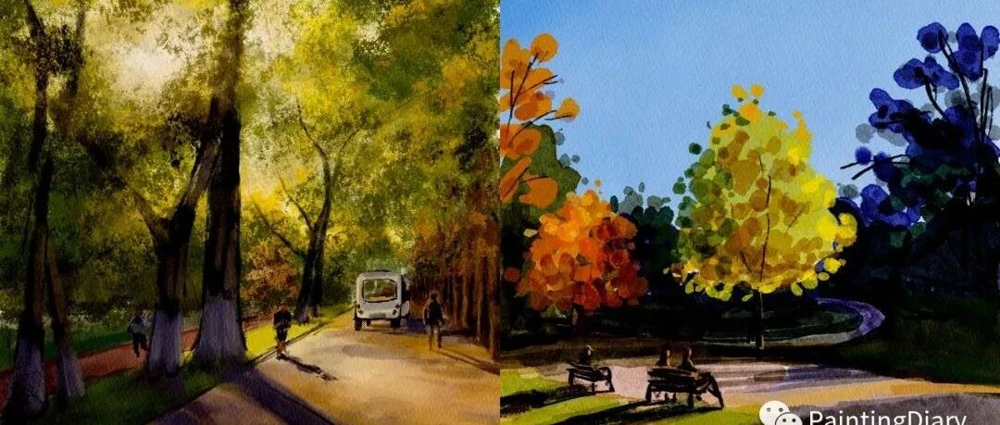

秋日的活力
原创
LCX
LCX
PaintingDiary
2022年10月23日 10:40
北京
在小说阅读器中沉浸阅读
一边听一边阅读感受更佳～
自从阳光每天早晨从窗户进入到房间里并且越走越远开始，
我就知道，秋天来了。
国庆过后北京秋意渐浓，每阵风都伴随一阵落叶，路上的景色，每一帧都像电影画面。
最近很喜欢去奥森溜达，虽然所有的公园都进入到了一种温暖慵懒的秋日氛围，但奥森里的10公里跑道却让它独具活力。
在金色大道上，不只有我们这种裹着风衣和围巾散步、晒太阳的都市闲人，还有穿着背心短裤，活力满满的“长跑选手”们～
看他们身姿矫健、步伐轻盈、神情轻快地掠过一批批赏秋游客，突然觉得天气冷也不应该成为偷懒的借口呀。即使是秋天，还是可以拥有夏日般火热的运动精神！～
每次画树都会画很长的时间，最近在探索新的画风，尝试了一下简单的用颜色来概括植物的方法，比如下面这张，也是奥森的景色。
不知道大家觉得这个画风怎么样～
都是用pad画的，加速视频一起放在下边～欢迎点击观看～
那这次先到这里啦，我要去继续探索北京的秋天啦～祝大家周日愉快～
下回见～欢迎留言、转发or给个"在看"呦～蟹蟹～